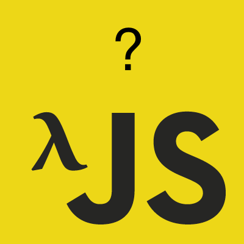

이 포스트는 인프런에서 진행한 유인동 님의 함수형 자바스크립트를 듣고 감명 받아서 쓴 글이다.
사실 underscore, lodash 등 함수형 패러타임으로 코드를 짤 수 있게 끔
미리 이런 함수들을 제공하는 라이브러리들을 쓰고, 이 포스트는 그닥 볼 필요가 없다.
하지만 이런 원리를 알고 접근을 하다보면 위 라이브러리를 쓴다고 하더라도 추가로 필요한 나의 코드를 함수형으로 더 짜기 유용하지 않을까?
목차
포스트와는 무관하며 내가 정리한 함수형 JS의 포스트 목록이다.
함수형 JS?
간단하게 생긴 모습을 보면 다음과 같다.
모두 다 그런 건 아니지만 대체적으로
뭔가 .을 찍고 찍고 들어간다고 하면 그건 객체 지향형(객체에 존재하는 메소드나 프로퍼티 등등을 사용)
그냥 함수로 시작해서 그 안에서 함수 쓰고 쓰고 뭐시기 지지고 볶고 하다가 함수로 끝나면 함수형이라고 보면 될 것 같다.
순수 함수?
함수형 프로그래밍을 접하다 보면 순수 함수란 것을 많이 보게 된다.
이는 객체 지향형에서 쓰이던 메소드와는 매우 다르다.
객체 지향형(arr.push(4))이 어떻게 동작을 했는지 보면 다음과 같다.
- arr에 4라는 데이터를 제일 끝에 넣었다.
- arr은 push 메소드의 입력값이 아닌데 메소드 내부에서 사용을 하였다.
- push 메소드가 메소드 외부의 데이터를 손 댄 것이다.
- 사이드 이펙트(부수 효과)를 발생 시켰다.
물론 위와 같은 코드는 너무 간단해서 개발자가 당연히 사이드 이펙트를 기대하고 짠 코드이다.
객체 지향형은 기본적으로 사이드 이펙트를 기대하고 개발하게 된다.
따라서 실행 시점에 따라 출력값이 다르다.
즉 평가 시점을 어느 한 시점으로 한정 지을 수 밖에 없다.
그럼 함수형 코드(push(arr2, 4))를 한 번 보자.
- arr2를 복사하여 그 뒤에 4를 넣었다.
- push 함수의 입력값에 arr2가 있고, 그 입력값을 가지고만 함수가 실행되었다.
- push 메소드가 메소드 외부의 데이터에 손을 대지 않았다.
- 사이드 이펙트가 발생하지 않았다.
타입스크립트에서 any가 적폐 세력이라면, 함수형 프로그래밍에서는 사이드 이펙트가 적폐 세력인 것 같다.
사이드 이펙트가 없기 때문에 동일한 입력값을 넣으면 언제나 동일한 출력값이 나온다.
따라서 언제 실행하던 동일한 출력값이 나오기 때문에 평가 시점으로부터 자유롭다.
바로 이런 게 순수 함수다. (사이드 이펙트가 없다는 게 핵심)그렇다고 사이드 이펙트가 있는 함수를 불순 함수라고는 부르지 않는다.
수학 시간에 배웠던 바로 그 함수다.
f(x)는 언제나 y이다.
10년 후에 실행하던 100년 후에 실행하던 f(x)는 언제나 y이다.
하지만 객체 지향 개념의 함수(메소드)는 너무나 많은 사이드 이펙트로 둘러쌓여 있어서 실행할 때 마다 동일한 결과를 보장할 수 없다.
일급 함수? 일급 객체? 일급 시민?
아래 링크를 베꼈다.참고하였다.
JavaScript의 함수는 1급 객체(first class object)이다
일급 시민(first class citizen)
- 변수(variable)에 담을 수 있다.
- 매개변수(parameter)로 전달할 수 있다.
- 반환값(return value)으로 전달할 수 있다.
즉, 우리가 생각하는 값으로써 역할을 하는 것을 일급 시민이라고 말하는 것 같다.
일급 객체(first class object)
특정 언어에서 객체를 일급 시민으로써 다룰 수 있느냐를 뜻한다.
자바스크립트에서 객체는 위 조건을 만족하는 일급 시민이므로 일급 객체이다.
일급 함수(first class function)
특정 언어에서 함수를 일급 시민으로써 다룰 수 있느냐를 뜻한다.
자바스크립트에서 함수는 위 조건을 만족하는 일급 시민이므로 일급 함수이다.
또 일급 시민에 더해서 일급 함수는 다음과 같은 조건까지 있어야한다고 주장하기도 한다.
- 런타임(runtime) 생성이 가능하다.
- 익명(anonymous)으로 생성이 가능하다.
|
|
VO와 함수 표현식 및 선언식에 대한 내용은 아래 사이트를 참고하자.
하지만 자바스크립트에서 함수는 객체이다.
따라서 자바스크립트에서 함수는 일급 객체라고 주장도 하지만 나는 일급 함수가 좀 더 정확한 것 같다. (더 많은 조건을 충족하므로)
뭐 자바스크립트에서 함수가 일급 시민이건 객체건 함수건 뭐가 중요한 지는 다음 고차 함수를 통해 알 수 있다.
고차 함수?
함수형 프로그래밍을 접하다 보면 고차 함수란 것을 많이 보게 된다.
뭔가 고차원적인 함수일 것 같은데 전혀 아니다.
바로 다음과 같은 걸 고차 함수라고 말한다.
- 함수의 인자로 함수를 받는 경우
- 함수의 출력값이 함수인 경우
- 함수의 인자로 함수를 받으면서 출력값이 함수인 경우 (1+2번의 경우)
|
|
함수형 프로그래밍의 장점은 여러가지 로직들을 추상화할 수 있는데,
매개변수로 함수를 넘기기 때문이다.
또 그 출력값으로 얻어낸 함수를 실행해서 여러 코드와 조합을 할 수 있다.
내가 아는 한도 내에서 틀렸을지 모르겠지만 함수형 자바스크립트에 대한 것은 다 적은 것 같으니 이제 목차를 보고 하나씩 터득해보자.